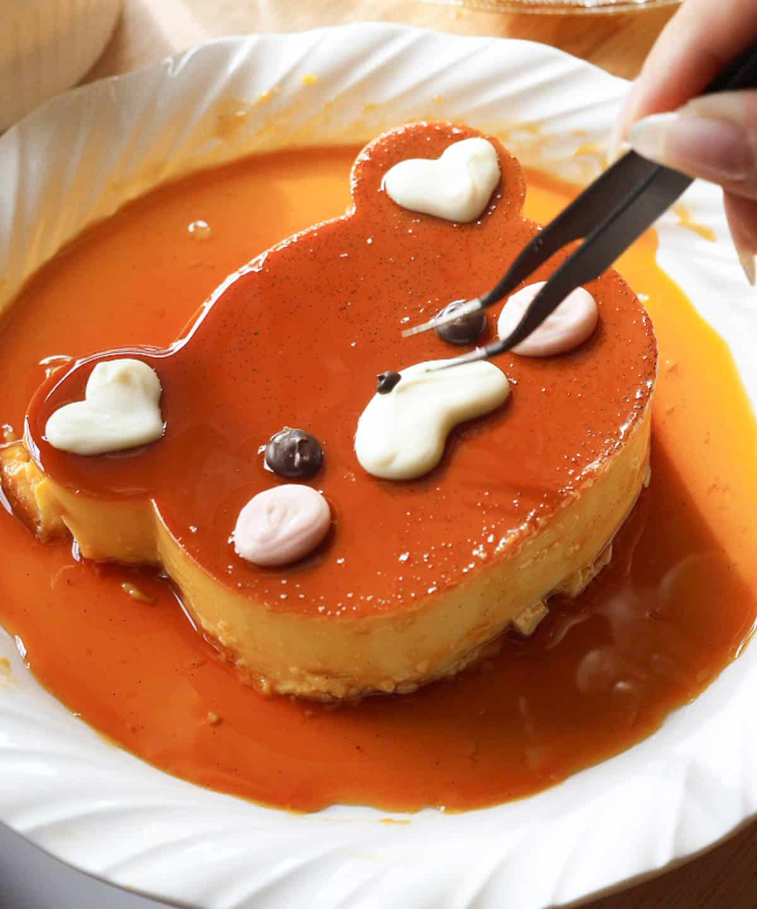

Ingredients
- →10 pieces eggs
- →1 can condensed milk (14 oz)
- →1 cup fresh milk or evaporated milk
- →1 cup granulated sugar
- →1 teaspoon vanilla extract
Instructions
- →Using all the eggs, separate the yolk from the egg white (only egg yolks will be used).
- →Place the egg yolks in a big bowl then beat them using a fork or an egg beater
- →Add the condensed milk and mix thoroughly
- →Pour-in the fresh milk and Vanilla. Mix well
- →Put the mold (llanera) on top of the stove and heat using low fire
- →Put-in the granulated sugar on the mold and mix thoroughly until the solid sugar turns into liquid (caramel)
having a light brown color.
- →Spread the caramel (liquid sugar) evenly on the flat side of the mold
- →Wait for 5 minutes then pour the egg yolk and milk mixture on the mold
- →Cover the top of the mold using an Aluminum foil
- →Steam the mold with egg and milk mixture for 30 to 35 minutes.
- →After steaming, let the temperature cool down then refrigerate
- →Serve for dessert. Share and Enjoy!